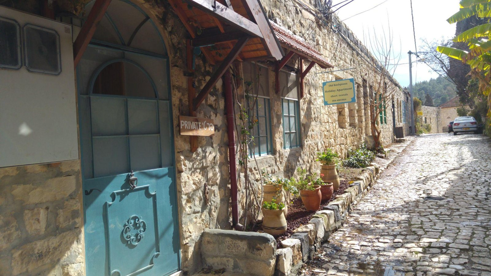

ראש פינה · מצגת התמונות הרשמיתמאפיינים ושיווק · נושא 12 · הרחבהלא נשאל בבגרות
למה משפחה אחת בוחרת צימר בראש פינה, ומשפחה אחרת מלון באילת? בנושא הזה לומדים מה משפיע על ההחלטה לקנות חופשה, ואיך המשווק משתמש בזה.
נושא הרחבה מתוך הספר "ניהול השיווק התיירותי" (פרק ג׳). הוא לא נשאל בבגרויות, אבל עוזר להבין את פילוח השוק ואת התקשורת השיווקית.
מושגי יסוד
התנהגות צרכנים היא הדרך שבה אנשים בוחרים, קונים ומשתמשים במוצרים, ומה משפיע עליהם. מי שמכיר את הלקוחות שלו מתאים להם מוצרים, ולא מבזבז כסף על שיווק שלא עובד.
| שוק | מי קונה, ולמה | דוגמה |
|---|---|---|
| צרכנים | לשימוש אישי או של אחרים | הורים קונים חופשה משפחתית |
| יצרנים | ארגונים שקונים כדי לייצר | מסעדה קונה חומרי גלם |
| מתווכים | קונים כדי למכור ברווח | סיטונאי או סוכנות נסיעות |
קונה ≠ צרכן: בתיירות לעיתים קרובות אחד משלם, ואחרים נהנים.
מי מחליט על החופשה
הבת מציעה לנסוע ליוון (יוזמת). חבר ממליץ על מלון (משפיע). ההורים בוחרים (מחליטים). האב מזמין באתר (קונה). כל המשפחה נופשת (צרכנים).
המסקנה למשווק: לפנות גם למי שמשפיע ולמי שיוזם, ולא רק למי שמשלם.
איך חוקרים צרכנים
| נקודת מבט | במה מתמקדת |
|---|---|
| כלכלית | הכנסה, מחיר ותועלת. המשאבים מוגבלים, ולכן בוחרים. |
| פסיכולוגית | מניעים, רגשות, תפיסה, למידה ועמדות. |
| סוציולוגית | משפחה, קבוצות ומעמד. |
| אנתרופולוגית | תרבות, ערכים ומסורות. |
מחיר גבוה לא תמיד מרתיע. לפעמים הוא סימן לאיכות, ומלון יוקרה מושך לקוחות דווקא בגלל המחיר.
הגורמים המשפיעים · א
הגורמים המשפיעים · ב
| רמה | צורך | בתיירות |
|---|---|---|
| 5 | הגשמה עצמית | צמיחה: תרבות, טבע, חלק מהצליינות |
| 4 | הערכה | מעמד, יוקרה והכרה |
| 3 | שייכות ואהבה | זמן עם המשפחה והחברים |
| 2 | ביטחון | הגנה ויציבות |
| 1 | פיזיולוגי | אוכל, שינה ומנוחה |
שני אורחים באותו מלון יוקרה: אחד בא לנוח (צורך פיזיולוגי), והשני כדי להראות לחברים איפה היה (צורך בהערכה).
מאסלו הוא מודל שעוזר לנתח, ולא חוק קשיח.
הגורמים המשפיעים · ג
המשווק צריך להבין לא רק מה הלקוח רוצה, אלא גם מה מונע ממנו לממש את הרצון. למשל: ביטוח שמרגיע את מי שחושש.
הגורמים המשפיעים · ד
איך מחליטים
מוצר מוכר, נקנה מתוך הרגל. מבצעים ופרסום משפיעים.
מחפשים מידע, משווים ושוקלים. חשובים מידע, אמון והפחתת סיכון. חופשה היא בדרך כלל קנייה מורכבת.
מודל התייר (1982): צורך לנסוע ← איסוף מידע ← החלטה ← החוויה ← הערכת שביעות הרצון.
המודלים הישנים הניחו תכנון מסודר. "הכול כלול", דילים של הרגע האחרון והאינטרנט שינו את התמונה.
למה קונים
מניע קנייה הוא כוח פנימי שמביא לחפש, להשוות ולקנות. יש שני סוגים:
להשיג משהו: הנאה, מעמד, הכרה. חופשת הרפתקאות בשביל ריגוש.
להפחית משהו: פחד או לחץ. חופשה שקטה כדי לברוח מהלחץ.
לא מספיק לדעת מה הלקוח קונה. צריך לדעת למה. זה הבסיס לפילוח לפי צרכים ותועלת (נושא 9).
אחרי הקנייה
השיווק לא נגמר בקנייה. לקוח מרוצה חוזר, נשאר נאמן וממליץ לאחרים (מפה לאוזן).
תרגול מהיר · בסטודיו
שאלות פתוחות · עונים בסטודיו
תרגול מהיר · בסטודיו
סיכום
בנושא הבא, עוד הרחבה: מכירות ומחקרי שוק.